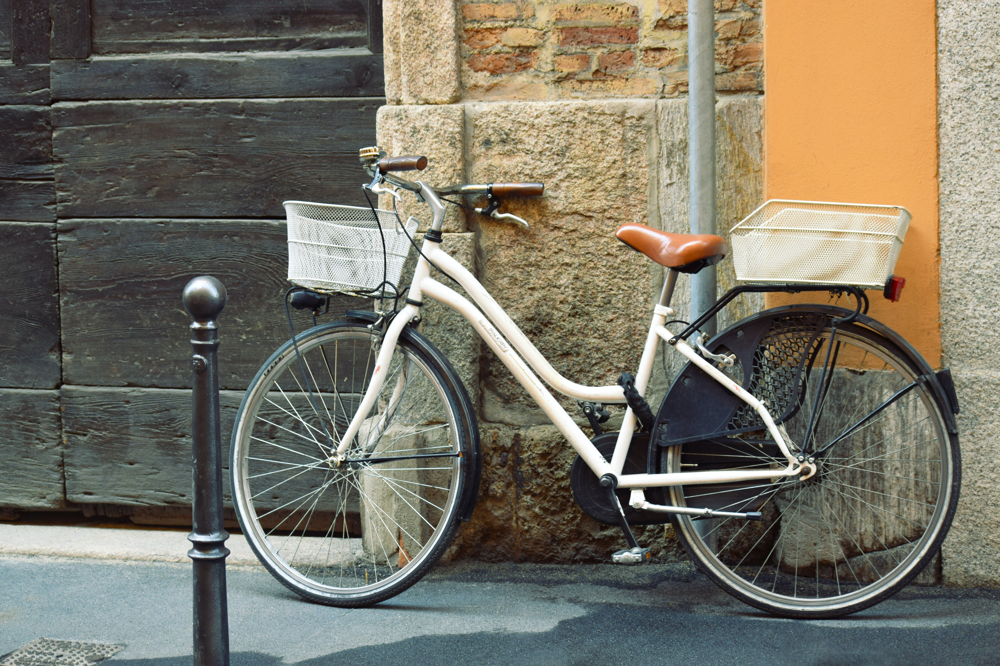

- Ιστορική αναδρομή.
- Ο μηχανισμός των ποδηλάτων.
- Το ποδήλατο στην Ευρώπη.
Ιστορική αναδρομή.
Δεν υπάρχει συγκεκριμένη χρονολογία στην οποία να αποδίδεται η εφεύρεση του ποδηλάτου, επομένως ούτε συγκεκριμένος εφευρέτης αυτού. Πολύ πριν την εμφάνιση κάποιας κατασκευής παρόμοιας με ένα τυπικό σύγχρονο ποδήλατο, έχει καταγραφεί ένα ποικίλο φάσμα οχημάτων που εκμεταλλεύονταν μόνο τη μυϊκή δύναμη του αναβάτη τους.
Η πρώτη απτή εμφάνιση του ποδηλάτου, με τελείως διαφορετική κατασκευή από τα σημερινά, ήταν γύρω στο 1750 στη Νυρεμβέργη.Αυτός ο πρώτος παππούς του ποδηλάτου ήταν τόσο απλός που δεν είχε ούτε πετάλια, ούτε τιμόνι, και ήταν εξολοκλήρου κατασκευασμένος από ξύλο.
Το 1817 στη Γερμανία, ο βαρώνος Karl von Drais, θέλοντας ένα μεταφορικό μέσο για τη βόλτα του στους κήπους του, κατασκεύασε από ξύλο και αυτός την ντρεζίνα (draisienne) που πήρε το όνομα της από το επώνυμο του.Η διαφορά με το προηγούμενο ήταν πως είχε τιμόνι, αλλά η κίνηση εξακολουθούσε να γίνεται ουσιαστικά περπατώντας και τσουλώντας αυτό το όχημα! Γι’ αυτό και πήρε το όνομα «μηχανή περπατήματος».Φιλοδοξία του βαρώνου ήταν να αντικαταστήσει το άλογο σαν μεταφορικό μέσο, γι’ αυτό και το έλεγαν και hobby-horse ή dadny-horse.Την επόμενη χρονιά στη Μεγάλη Βρετανία, ο Dennis Johnson αντικατέστησε πολλά ξύλινα κομμάτια της ντρεζίνας με μεταλλικά
Μερικά χρόνια αργότερα, το 1839 στη Σκωτία, ο Kirkpatrick Macmillan ήταν ο πρώτος που έβαλε πετάλια και τα συνέδεσε με την πίσω ρόδα, αλλά χωρίς αλυσίδα. Φανταστείτε κάτι σαν τα παιδικά αυτοκινητάκια που κινούνται με τα πόδια, όχι περπατώντας όμως. Το 1860 στη Γαλλία, ο Pierre Michaux τοποθέτησε τα πετάλια στην μπροστινή ρόδα, δημιουργώντας το Velocipede, που σημαίνει «γρήγορα πόδια». Επίσης αύξησε το μέγεθος της εν λόγω ρόδας και έβαλε λάστιχα από σκληρό καουτσούκ. Μέχρι τότε οι ρόδες ήταν κυρίως ξύλινες και χωρίς καθόλου λάστιχα. Η πρώτη εμφάνιση του διπλού ποδήλατου έγινε το 1886 και είχε 4 ρόδες: δύο μεγάλες και δύο μικρές. Οι αναβάτες ουσιαστικά κάθονταν ανάμεσα στις δύο μεγάλες ρόδες και είχαν τις μικρές για να μην πέφτουν.
Συνεχίζοντας την ιστορία του ποδηλατου, φτάνουμε στο 1870, όπου οι James Starley και William Hillman στη Βρετανία, κατασκεύασαν την Ariel, με πολύ μεγαλύτερη την μπροστινή ρόδα με τα πετάλια. Η φιλοσοφία τους ήταν πως, όσο μεγαλύτερη η ρόδα (η οποία πολλές φορές κατασκευαζόταν με βάση το μήκος του ποδιού του αναβάτη), τόσο μεγαλύτερη απόσταση θα διένυε σε κάθε περιστροφή των πεταλιών. Εκείνη την εποχή το αποκαλούσαν και penny-farthing, επειδή οι ρόδες τους είχαν περίπου την αναλογία των εν λόγω κερμάτων στο μέγεθος.
Το 1885 έγινε η κυριότερη μετατροπή και από τότε το ποδήλατο πήρε την κλασική του εμφάνιση με τις δύο ίδιες ρόδες, την αλυσίδα που δίνει κίνηση στην πίσω ρόδα και τις μεταλλικές ακτίνες. Σε αυτό βοήθησε πολύ και η εξέλιξη της μεταλλουργίας. Υπεύθυνος για όλα αυτά καθώς και για τη σαμπρέλα και τις ταχύτητες ήταν ο ανηψιός του James, ο John Kemp Starley. Επίσης άλλαξε τον σκελετό με κούφιο μεταλλικό μειώνοντας το βάρος του ποδηλάτου. Το μοντέλο αυτό το ονόμασε rover.Αξίζει να αναφέρουμε επίσης πως το 1885, το ποδήλατο έκανε την πρώτη του εμφάνιση στην Ελλάδα.
Ο μηχανισμός των ποδηλάτων.

Το ποδήλατο αποτελεί ένα καλό εργαλείο, προκειμένου να αναδειχθούν ορισμένες αρχές της φυσικής. Με αφορμή, για παράδειγμα, τις εικόνες παλαιοτέρων ποδηλάτων με ιδιαίτερα μεγάλους τροχούς θα μπορούσε να αναρωτηθεί κανείς με ποιον τρόπο επηρεάζει τη λειτουργία του ποδηλάτου το μέγεθος των τροχών του. Σύμφωνα με τη φυσική, η κίνηση που εκτελεί ένας τροχός που κυλά είναι σύνθετη: αποτελεί το συνδυασμό μεταφορικής κίνησης και στροφικής κίνησης. Η ταχύτητα του ποδηλάτου μπορεί να μελετηθεί με τη χρήση του κέντρου μάζας του τροχού, το οποίο αποδεικνύεται πως βρίσκεται στο κέντρο του τροχού. Η ταχύτητα του κέντρου μάζας του τροχού αποδεικνύεται πως είναι ευθύγραμμη ομαλή με ταχύτητα u=ωR, όπου ω η γωνιακή συχνότητα περιστροφής του τροχού και R η ακτίνα του. Με άλλα λόγια, υπάρχουν δύο τρόποι με τους οποίους μπορεί να αυξηθεί η ταχύτητα ενός ποδηλάτου: είτε αυξάνοντας τη γωνιακή συχνότητα (ω) των τροχών (κάνοντας δηλαδή γρηγορότερα πετάλι), είτε αυξάνοντας την ακτίνα τους (R). Ο λόγος για τον οποίο τα σύγχρονα ποδήλατα δεν έχουν τόσο μεγάλους τροχούς, είναι η επινόηση του συστήματος ταχυτήτων, με τη βοήθεια του οποίου μπορούν εύκολα να επιτευχθούν αυξημένες τιμές γωνιακής συχνότητας (ω).
Το ποδήλατο στην Ευρώπη.

Το ποδήλατο είναι ένα αρκετά διαδεδομένο μέσο μετακίνησης σε όλη την Ευρώπη.Παρότι οι βιώσιμες μεταφορές παίζουν όλο και πιο σημαντικό ρόλο για τη βιώσιμη ανάπτυξη των πόλεων, οι πολίτες στην Ελλάδα δεν είναι ενημερωμένοι και εξοικειωμένοι με αυτές τις πρακτικές. Οι όποιες προσπάθειες γίνονται σήμερα σε τοπικό ή εθνικό επίπεδο αντιμετωπίζουν δυσκολίες λόγω της απουσίας ενημέρωσης και ευαισθητοποίησης, αλλά και παγιωμένων συνηθειών.
Παρά το γεγονός ότι το ποδήλατο στο παρελθόν χρησιμοποιόταν ευρέως σε όλη την Ευρώπη- από το Βορρά ως το Νότο- σαν μέσο μετακίνησης, σήμερα στις Νοτιοευρωπαϊκές - Μεσογειακές χώρες, συμπεριλαμβανομένης και της Ελλάδας, η χρήση του δεν είναι και τόσο διαδεδομένη. Ο βασικότερος λόγος είναι γιατί θεωρείται ένα ξεπερασμένο μέσο μετακίνησης, ένα παιχνίδι για παιδιά ή μια αθλητική δραστηριότητα. Συγχρόνως, υπάρχει μια γενική αντίληψη, ότι για να χρησιμοποιήσει κάποιος ποδήλατο στις μετακινήσεις του, χρειάζεται μία επίπεδη πόλη, ένα ήπιο και όχι υγρό κλίμα και απουσία δυνατών ψυχρών ανέμων.
Παρά το γεγονός ότι το ποδήλατο στο παρελθόν χρησιμοποιόταν ευρέως σε όλη την Ευρώπη- από το Βορρά ως το Νότο- σαν μέσο μετακίνησης, σήμερα στις Νοτιοευρωπαϊκές - Μεσογειακές χώρες, συμπεριλαμβανομένης και της Ελλάδας, η χρήση του δεν είναι και τόσο διαδεδομένη. Ο βασικότερος λόγος είναι γιατί θεωρείται ένα ξεπερασμένο μέσο μετακίνησης, ένα παιχνίδι για παιδιά ή μια αθλητική δραστηριότητα. Συγχρόνως, υπάρχει μια γενική αντίληψη, ότι για να χρησιμοποιήσει κάποιος ποδήλατο στις μετακινήσεις του, χρειάζεται μία επίπεδη πόλη, ένα ήπιο και όχι υγρό κλίμα και απουσία δυνατών ψυχρών ανέμων.
Παραδείγματα πόλεων.
- Στην Πάρμα, μία πόλη της νότιας Ιταλίας (176.000 κάτοικοι), το 19% των μετακινήσεων γίνεται με ποδήλατο. Το αντίστοιχο ποσοστό του Άμστερνταμ (με περίπου 1.000.000 κατοίκους) είναι 20%.
- Στην Ferrara (160.000 κάτοικοι) το 31% των καθημερινών μετακινήσεων γίνεται με ποδήλατο.
- Η Σουηδία, που είναι βόρεια και κρύα χώρα, το 33% των μετακινήσεων στην πόλη Vasteras (115.000 κάτοικοι) γίνεται με ποδήλατο.- Η Ελβετία, δεν είναι μια επίπεδη χώρα, στη Βασιλεία (230.000 κάτοικοι), όμως, το 23% των κατοίκων χρησιμοποιεί το ποδήλατο στις καθημερινές του μετακινήσεις και στη Βέρνη το 7%.
- Η Μεγάλη Βρετανία είναι μια υγρή χώρα, στο Κέιμπριτζ (100.000 κάτοικοι), ωστόσο, το 27% των μετακινήσεων γίνεται με ποδήλατο.
- Στη Νορβηγία, στο Trondheim, το ποσοστό των μετακινήσεων με ποδήλατο είναι 8%. Λόγω της ορεινής του μορφολογίας, η πολιτεία έφτιαξε το πρώτο σύστημα «τελεφερίκ - ποδηλάτων» στον κόσμο.